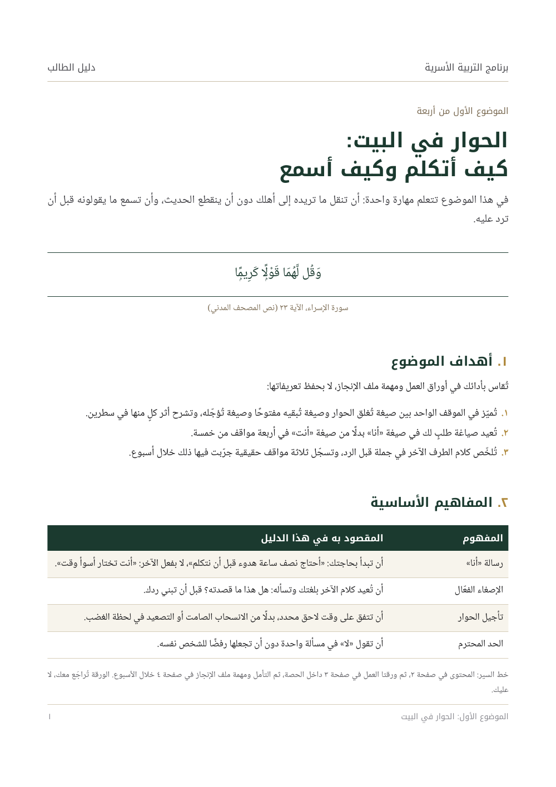
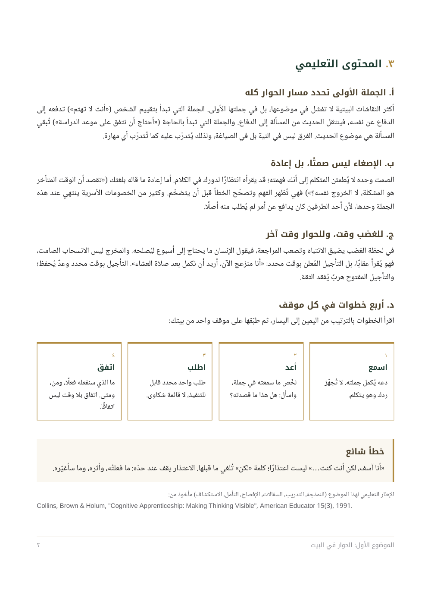
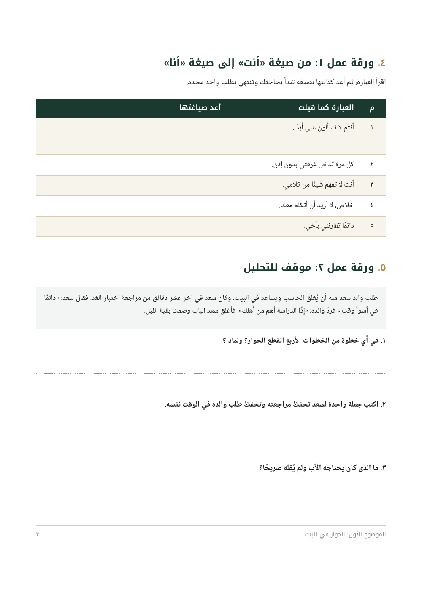
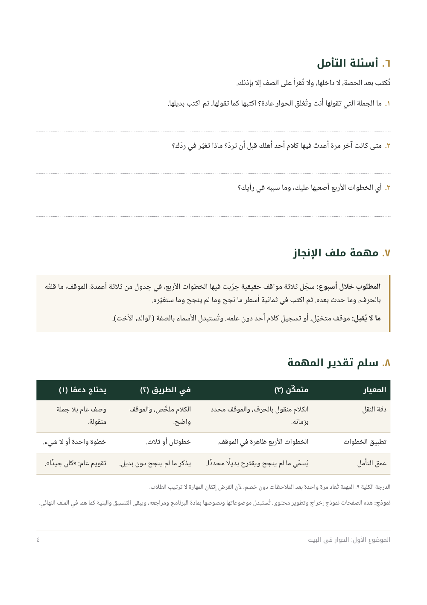
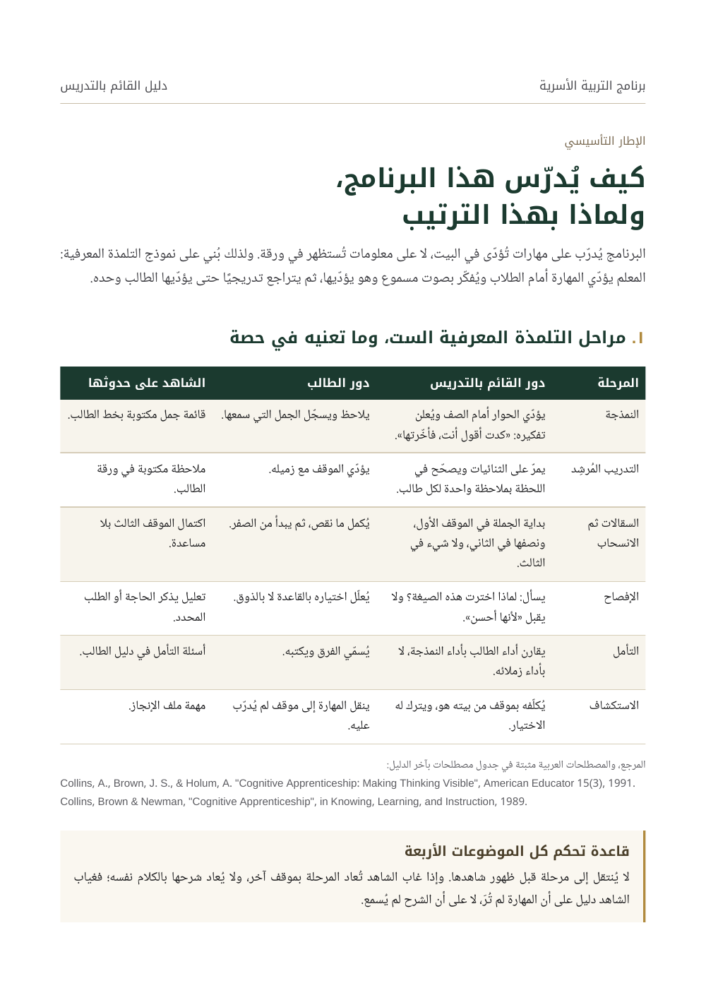
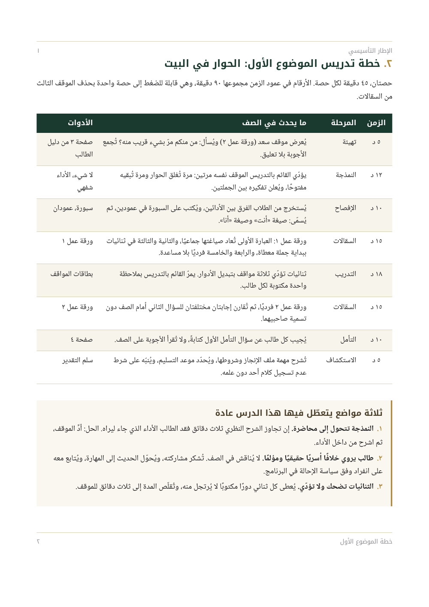
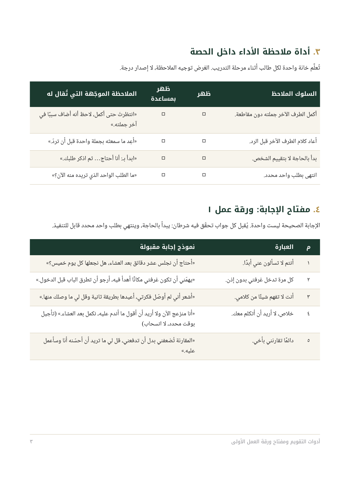
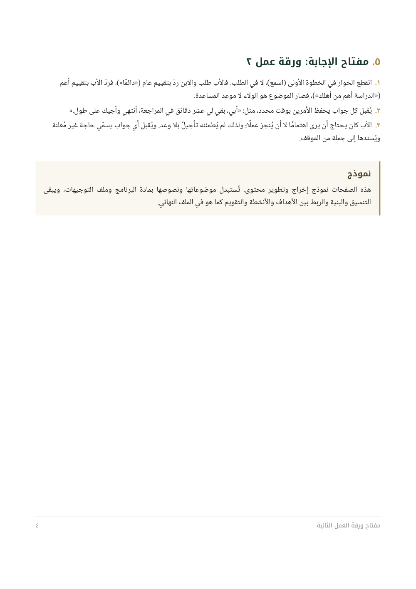

دليل الطالب




دليل القائم بالتدريس




ما الذي يثبته هذا النموذج
- الترابط مطبَّق لا موصوف: كل هدف في صفحة ١ له نشاط في صفحة ٣ وأداة تقويم في صفحة ٤، وكل مرحلة في دليل المعلم لها شاهد يُرى في ورقة الطالب.
- إخراج موحّد: الدليلان على قالب واحد، بمقاس A4 وهوامش ثابتة وترويسة وتذييل وجداول بنمط واحد.
- عربية سليمة الاتجاه: المنظم البصري يُقرأ من اليمين، والمراجع اللاتينية في سطر مستقل حتى لا تنكسر علاماتها داخل السطر العربي.
- الصيغتان من مصدر واحد: ملف المصدر يُخرج PDF للطباعة و Word للتعديل، فلا يفترق المحتوى بينهما عند أي تعديل لاحق.
فرق يُقال صراحة: ملف الـ PDF هو نسخة الطباعة بالتصميم كاملًا، وملف الـ Word نسخة التعديل: يحمل النص نفسه والبنية نفسها بتنسيق أبسط. إن كان المطلوب أن يحمل ملف الـ Word التصميم نفسه حرفيًا، فهذا يُتفق عليه ضمن معايير القبول، ويُعرض على صفحة واحدة من محتواكم قبل أي دفع.